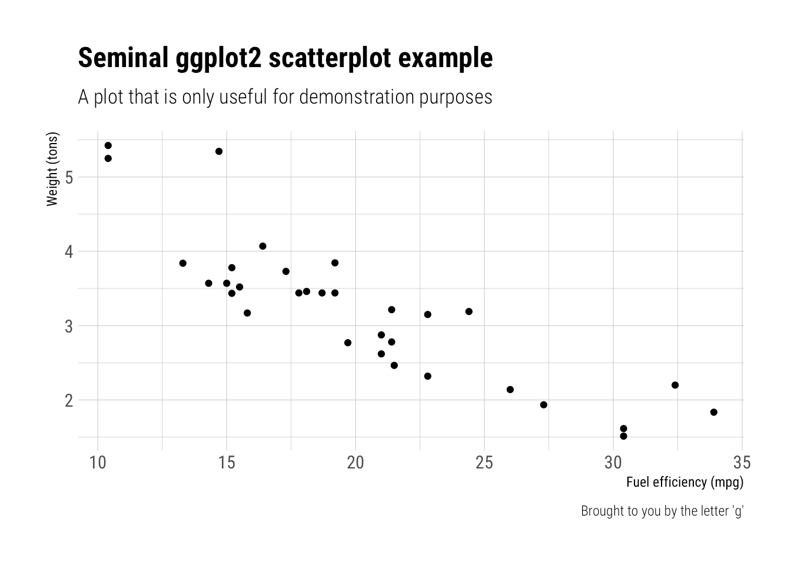
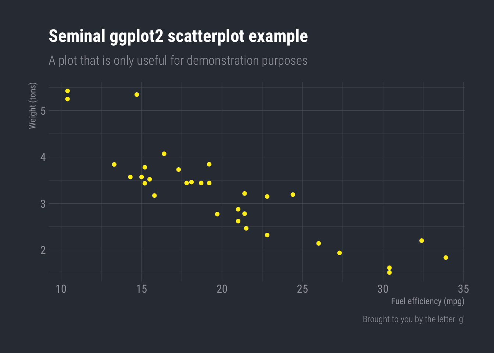
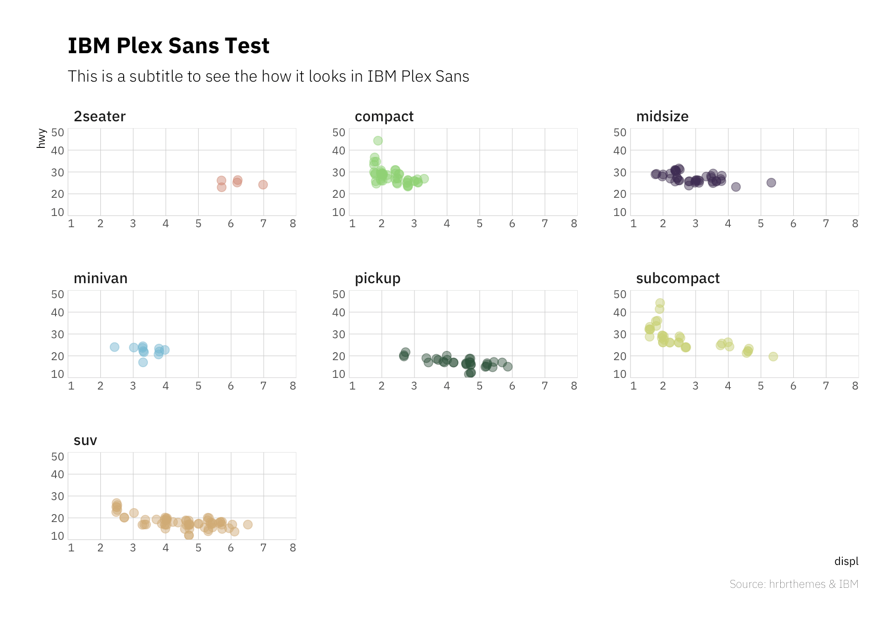
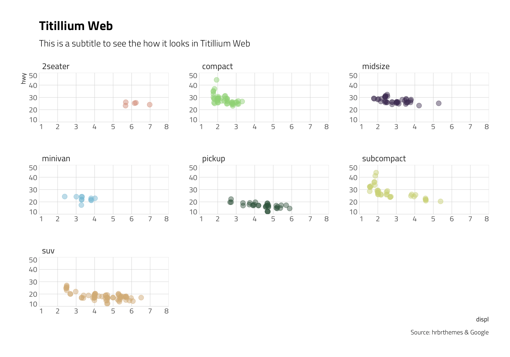
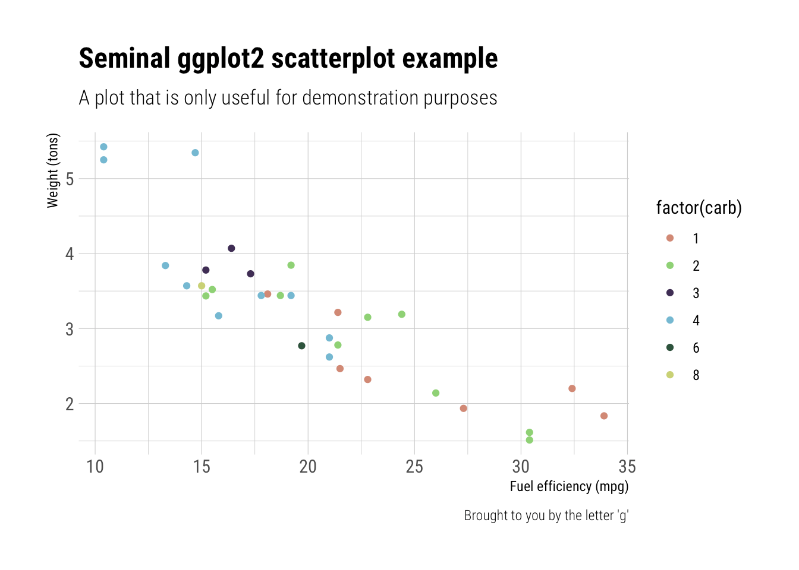
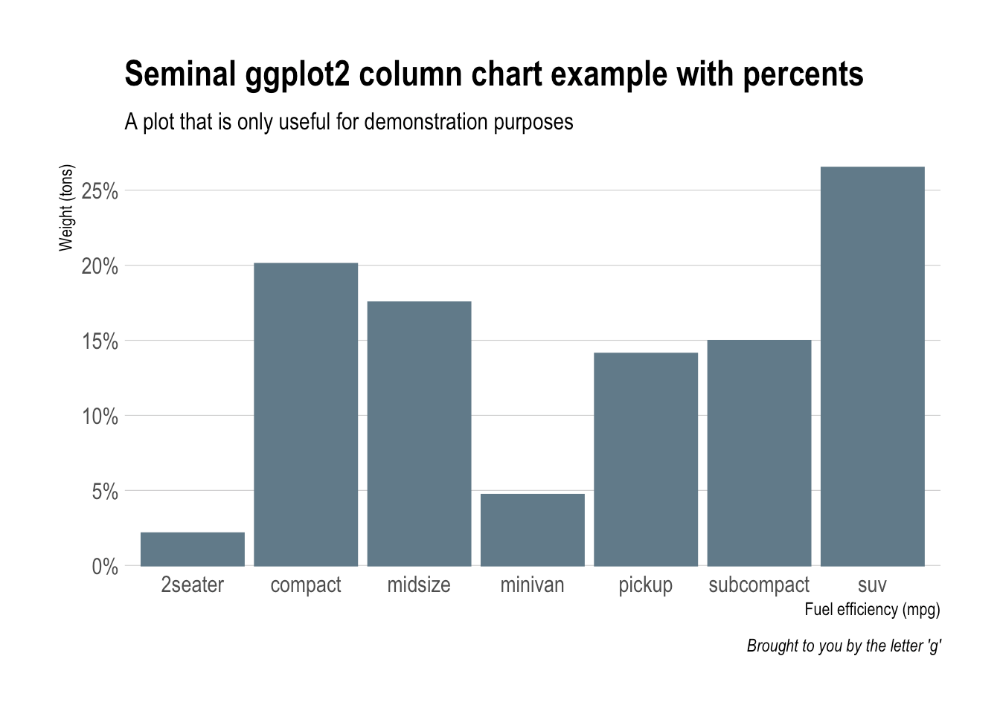
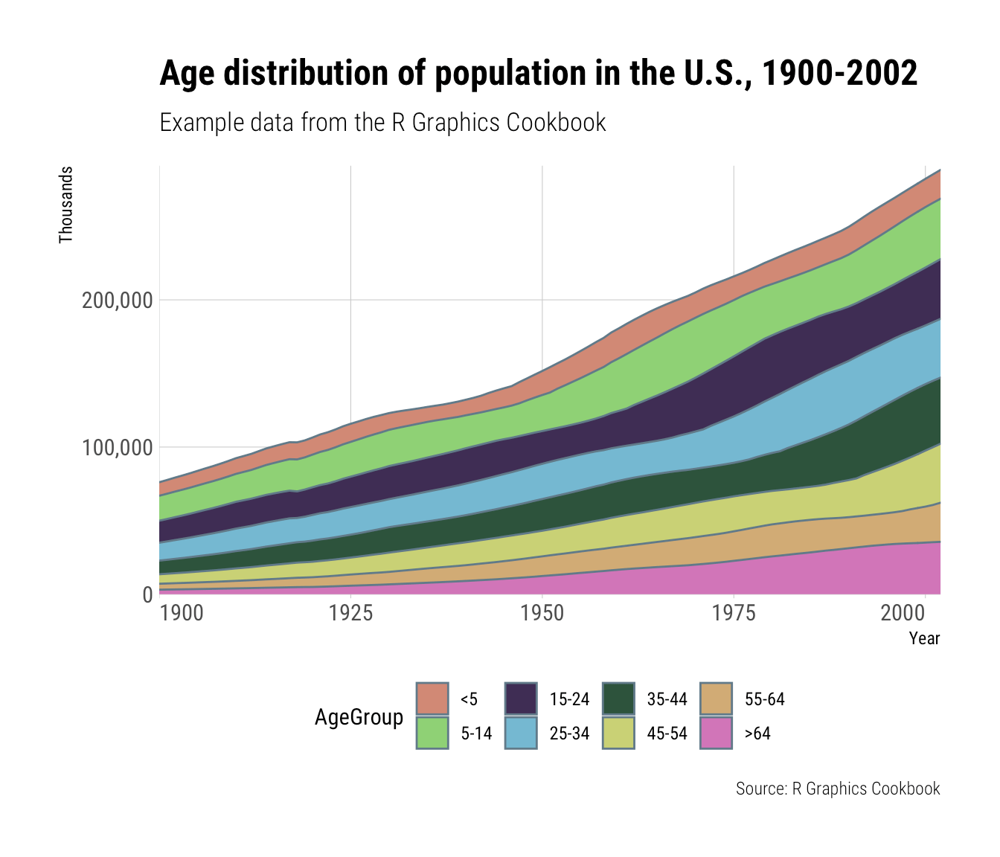
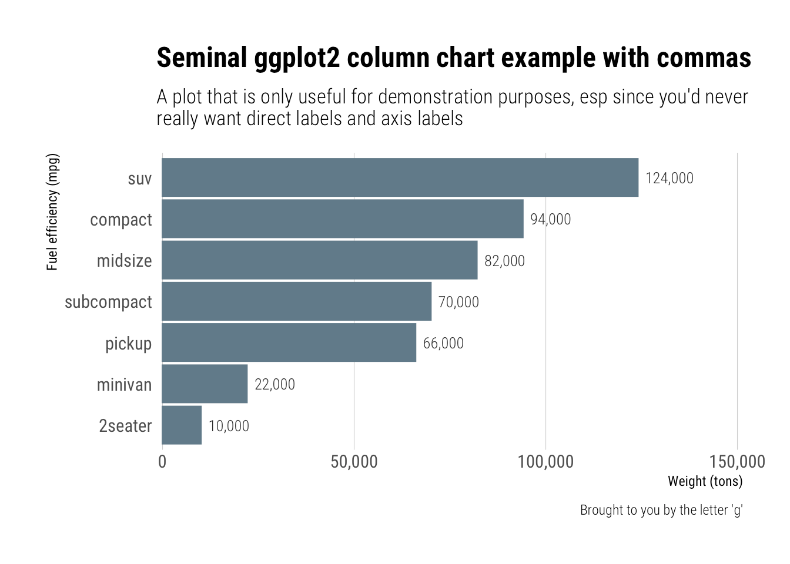
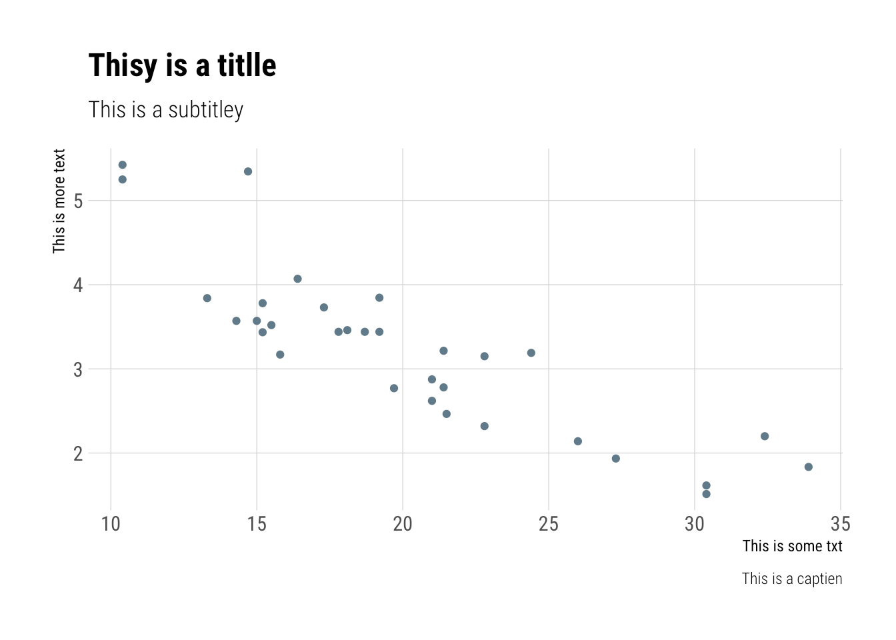

hrbrthemes
Additional Themes and Theme Components for ‘ggplot2’
This is a very focused package that provides typography-centric themes and theme components for ggplot2. It’s a an extract/riff of hrbrmisc created by request.
The core theme: theme_ipsum (“ipsum” is Latin for “precise”) uses Arial Narrow which should be installed on practically any modern system, so it’s “free”-ish. This font is condensed, has solid default kerning pairs and geometric numbers. That’s what I consider the “font trifecta” must-have for charts. An additional quality for fonts for charts is that they have a diversity of weights. Arial Narrow (the one on most systems, anyway) does not have said diversity but this quality is not (IMO) a “must have”.
The following functions are implemented/objects are exported:
Themes:
-
theme_ipsum: Arial Narrow -
theme_ipsum_gs: Goldman Sans Condensed -
theme_ipsum_es: Econ Sans Condensed -
theme_ipsum_rc: Roboto Condensed -
theme_ipsum_ps: IBM Plex Sans font -
theme_ipsum_pub: Public Sans -
theme_ipsum_tw: Titillium Web -
theme_modern_rc: Roboto Condensed dark theme -
theme_ft_rc: Dark theme based on FT’s dark theme (Roboto Condensed)
Scales (that align with various themes):
-
scale_color_ipsum: Discrete color & fill scales based on the ipsum palette -
scale_colour_ipsum: Discrete color & fill scales based on the ipsum palette -
scale_fill_ipsum: Discrete color & fill scales based on the ipsum palette -
scale_color_ft: Discrete color & fill scales based on the FT palette -
scale_colour_ft: Discrete color & fill scales based on the FT palette -
scale_fill_ft: Discrete color & fill scales based on the FT palette -
scale_x_comma: X & Y scales with opinionated presets for percent & comma label formats -
scale_x_percent: X & Y scales with opinionated presets for percent & comma label formats -
scale_y_comma: X & Y scales with opinionated presets for percent & comma label formats -
scale_y_percent: X & Y scales with opinionated presets for percent & comma label formats
Palettes/Named Colors:
-
ipsum_pal: A muted, qualitative color palette -
ft_cols: FT color palette -
ft_pal: A bright qualitative color palette -
ft_text_col: FT color palette
Fonts:
-
font_an: Arial Narrow font name R variable aliases -
font_es: Econ Sans font name R variable aliases -
font_es_bold: Econ Sans font name R variable aliases -
font_es_light: Econ Sans font name R variable aliases -
font_rc: Roboto Condensed font name R variable aliases -
font_rc_light: Roboto Condensed font name R variable aliases -
font_pub: Public Sans font name R variable aliases -
font_pub_bold: Public Sans font name R variable aliases -
font_pub_light: Public Sans font name R variable aliases -
font_pub_thin: Public Sans font name R variable aliases -
font_ps: PlexSans font name R variable aliases -
font_ps_light: PlexSans font name R variable aliases -
font_tw: Titillium Web font name R variable aliases -
font_tw_bold: Titillium Web font name R variable aliases -
font_tw_light: Titillium Web font name R variable aliases
R Markdown:
-
ipsum: ipsum R markdown template -
ipsum_pdf: ipsum R markdown template for PDF output
Utilities:
-
flush_ticks: Makes axis text labels flush on the ends -
ft_geom_defaults: Change geom defaults from black to custom lights for the FT theme -
gg_check: Spell check ggplot2 plot labels -
import_econ_sans: Import Econ Sans Condensed font for use in charts -
import_plex_sans: Import IBM Plex Sans font for use in charts -
import_roboto_condensed: Import Roboto Condensed font for use in charts -
import_titillium_web: Import Titillium Web font for use in charts -
modern_geom_defaults: Change geom defaults from black to white for the modern theme -
update_geom_font_defaults: Update matching font defaults for text geoms
Installation
install.packages("hrbrthemes") # NOTE: CRAN version is 0.8.0
# or
install.packages("hrbrthemes", repos = c("https://cinc.rud.is", "https://cloud.r-project.org/"))
# or
remotes::install_git("https://git.rud.is/hrbrmstr/hrbrthemes.git")
# or
remotes::install_git("https://git.sr.ht/~hrbrmstr/hrbrthemes")
# or
remotes::install_gitlab("hrbrmstr/hrbrthemes")
# or
remotes::install_bitbucket("hrbrmstr/hrbrthemes")
# or
remotes::install_github("hrbrmstr/hrbrthemes")NOTE: To use the ‘remotes’ install options you will need to have the {remotes} package installed.
Usage
library(hrbrthemes)
library(gcookbook)
library(tidyverse)
# current verison
packageVersion("hrbrthemes")
## [1] '0.8.6'Base theme (Arial Narrow)
ggplot(mtcars, aes(mpg, wt)) +
geom_point() +
labs(x="Fuel efficiency (mpg)", y="Weight (tons)",
title="Seminal ggplot2 scatterplot example",
subtitle="A plot that is only useful for demonstration purposes",
caption="Brought to you by the letter 'g'") +
theme_ipsum()Roboto Condensed
ggplot(mtcars, aes(mpg, wt)) +
geom_point() +
labs(x="Fuel efficiency (mpg)", y="Weight (tons)",
title="Seminal ggplot2 scatterplot example",
subtitle="A plot that is only useful for demonstration purposes",
caption="Brought to you by the letter 'g'") +
theme_ipsum_rc()
New FT Theme!
ggplot(mtcars, aes(mpg, wt)) +
geom_point(color = ft_cols$yellow) +
labs(x="Fuel efficiency (mpg)", y="Weight (tons)",
title="Seminal ggplot2 scatterplot example",
subtitle="A plot that is only useful for demonstration purposes",
caption="Brought to you by the letter 'g'") +
theme_ft_rc()
IBM Plex Sans
ggplot(mpg, aes(displ, hwy)) +
geom_jitter(aes(color=class, fill=class), size=3, shape=21, alpha=1/2) +
scale_x_continuous(expand=c(0,0), limits=c(1, 8), breaks=1:8) +
scale_y_continuous(expand=c(0,0), limits=c(10, 50)) +
scale_color_ipsum() +
scale_fill_ipsum() +
facet_wrap(~class, scales="free") +
labs(
title="IBM Plex Sans Test",
subtitle="This is a subtitle to see the how it looks in IBM Plex Sans",
caption="Source: hrbrthemes & IBM"
) +
theme_ipsum_ps(grid="XY", axis="xy") +
theme(legend.position="none") -> gg
flush_ticks(gg)
## theme(axis.text.x=element_text(hjust=c(0, rep(0.5, 6), 1))) +
## theme(axis.text.y=element_text(vjust=c(0, rep(0.5, 3), 1)))
Titillium Web
ggplot(mpg, aes(displ, hwy)) +
geom_jitter(aes(color=class, fill=class), size=3, shape=21, alpha=1/2) +
scale_x_continuous(expand=c(0,0), limits=c(1, 8), breaks=1:8) +
scale_y_continuous(expand=c(0,0), limits=c(10, 50)) +
scale_color_ipsum() +
scale_fill_ipsum() +
facet_wrap(~class, scales="free") +
labs(
title="Titillium Web",
subtitle="This is a subtitle to see the how it looks in Titillium Web",
caption="Source: hrbrthemes & Google"
) +
theme_ipsum_tw(grid="XY", axis="xy") +
theme(legend.position="none") -> gg
flush_ticks(gg)
## theme(axis.text.x=element_text(hjust=c(0, rep(0.5, 6), 1))) +
## theme(axis.text.y=element_text(vjust=c(0, rep(0.5, 3), 1)))
Scales (Color/Fill)
ggplot(mtcars, aes(mpg, wt)) +
geom_point(aes(color=factor(carb))) +
labs(x="Fuel efficiency (mpg)", y="Weight (tons)",
title="Seminal ggplot2 scatterplot example",
subtitle="A plot that is only useful for demonstration purposes",
caption="Brought to you by the letter 'g'") +
scale_color_ipsum() +
theme_ipsum_rc()
Scales (Axis)
count(mpg, class) %>%
mutate(pct=n/sum(n)) %>%
ggplot(aes(class, pct)) +
geom_col() +
scale_y_percent() +
labs(x="Fuel efficiency (mpg)", y="Weight (tons)",
title="Seminal ggplot2 column chart example with percents",
subtitle="A plot that is only useful for demonstration purposes",
caption="Brought to you by the letter 'g'") +
theme_ipsum(grid="Y")
ggplot(uspopage, aes(x=Year, y=Thousands, fill=AgeGroup)) +
geom_area() +
scale_fill_ipsum() +
scale_x_continuous(expand=c(0,0)) +
scale_y_comma() +
labs(title="Age distribution of population in the U.S., 1900-2002",
subtitle="Example data from the R Graphics Cookbook",
caption="Source: R Graphics Cookbook") +
theme_ipsum_rc(grid="XY") +
theme(axis.text.x=element_text(hjust=c(0, 0.5, 0.5, 0.5, 1))) +
theme(legend.position="bottom")
update_geom_font_defaults(font_rc_light)
count(mpg, class) %>%
mutate(n=n*2000) %>%
arrange(n) %>%
mutate(class=factor(class, levels=class)) %>%
ggplot(aes(class, n)) +
geom_col() +
geom_text(aes(label=scales::comma(n)), hjust=0, nudge_y=2000) +
scale_y_comma(limits=c(0,150000)) +
coord_flip() +
labs(x="Fuel efficiency (mpg)", y="Weight (tons)",
title="Seminal ggplot2 column chart example with commas",
subtitle="A plot that is only useful for demonstration purposes, esp since you'd never\nreally want direct labels and axis labels",
caption="Brought to you by the letter 'g'") +
theme_ipsum_rc(grid="X")
Spellcheck ggplot2 labels
df <- data.frame(x=c(20, 25, 30), y=c(4, 4, 4), txt=c("One", "Two", "Three"))
ggplot(mtcars, aes(mpg, wt)) +
geom_point() +
labs(x="This is some txt", y="This is more text",
title="Thisy is a titlle",
subtitle="This is a subtitley",
caption="This is a captien") +
theme_ipsum_rc(grid="XY") -> gg
gg_check(gg)
## Possible misspelled words in [title]: (Thisy, titlle)
## Possible misspelled words in [subtitle]: (subtitley)
## Possible misspelled words in [caption]: (captien)